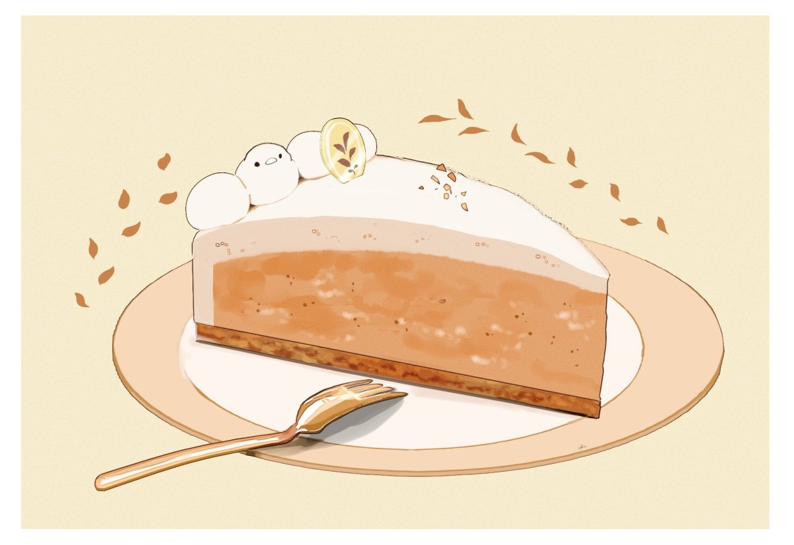

Russian Sour Cream Cake (Smetannik)

This Russian-layered Sour Cream Cake is extremely moist and undetectable in the chocolate and basic cake layers! Tort Smetannik (Russian Sour Cream Cake) will become a cake recipe you'll want to make for guests or as a quick dessert! It's incredibly easy and the cream frosting moistens the cake layers without any syrup! No one will tell there's sour cream in this amazing cake!
Ingredients
Cake
- 4 eggs
- 1 cup sugar
- 1 1/3 cup sour cream
- 1 heaping TBSP baking soda (dissolved in the sour cream)
- 1 1/2 cups flour
- 1/4 cup unsweetened cocoa powder
- 7 oz condensed milk (1/2 a can)
Sour Cream Frosting
- 8 oz cream cheese (softened)
- 1 1/2 cups sour cream
- 7 oz condensed milk (1/2 a can)
- 4 oz Cool Whip (half 8 oz package)
Instructions
- Preheat oven 350°F. Line and lightly grease two 9-inch springform pans with aluminum foil. Set aside.
- Beat eggs and sugar in a stand mixer over high speed for 15 minutes. Add the diluted baking soda in sour cream and condensed milk.
- Beat in the flour. Evenly divide the batter and leave one plain and whisk in cocoa powder to the other half. (about 3 cups of batter for each.)
- Bake 30-35 minutes or until done. Cool completely.
- Cut both cake layers in half making 4 layers in total. Stack and trim the sides. Finely crumble the trimmings and set aside for garnish later.
- TO MAKE CREAM: Beat the cream cheese until fluffy. Add in the condensed milk and gradually mix in the sour cream and Cool whip. Mix well. (Frosting will be on the runny side this soaks the layers.)
- Frost the cake and garish with cake crumbs. Let sit at least an hour before serving or refrigerate overnight.